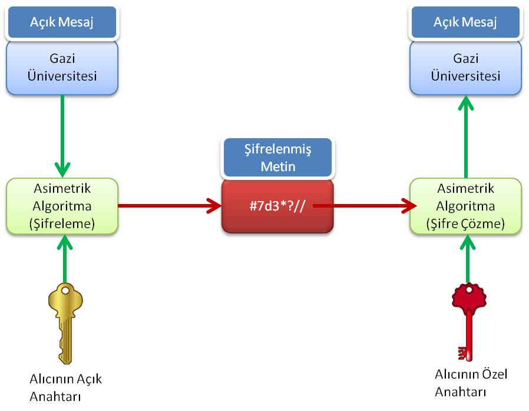

6.8.2.
Asimetrik (Açık Anahtarlı) Şifreleme
Asimetrik şifrelemede, özel ve açık olmak üzere bir anahtar çifti vardır.
Kişi kendi özel anahtarını gizli tutarken, açık anahtarını şifreli iletişim kuracağı kişilere iletir.
Bu özelliğinden dolayı açık anahtarlı şifreleme denir.
Bu anahtarlar birbirine matematiksel bir ilişkiyle bağlanmıştır fakat; anahtarlardan birini kullanarak diğerini elde etmek çok zor hatta imkansızdır.
Anahtarlardan açık olanıyla şifrelenen bir veri ancak bu açık anahtara karşılık gelen özel anahtarla açılabilir.
